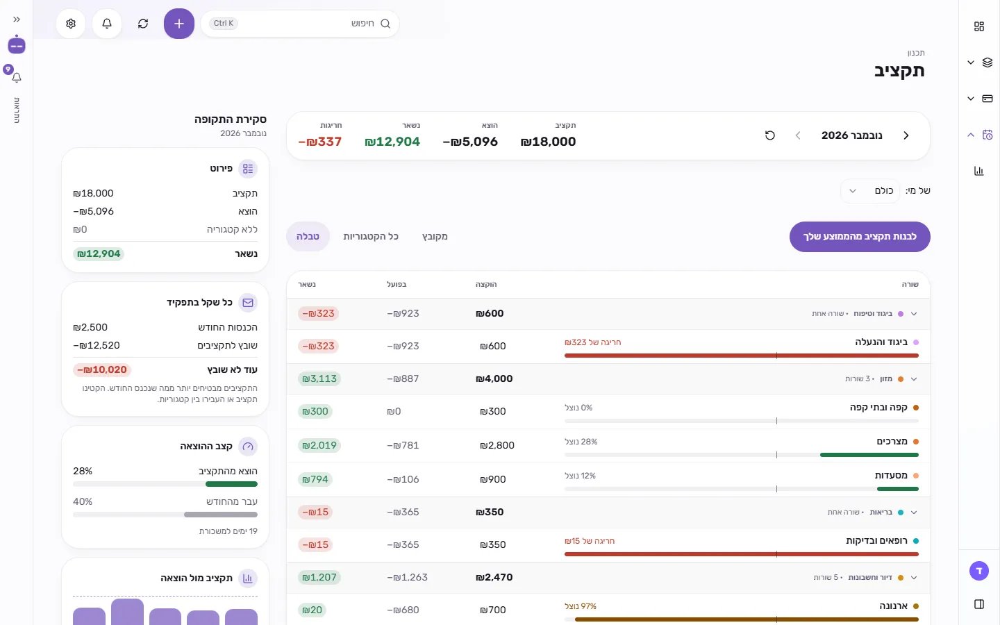
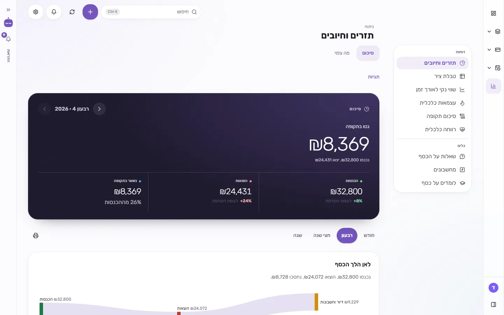
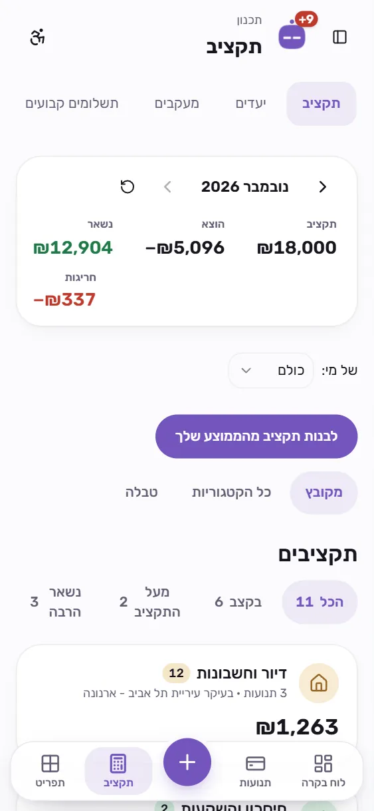
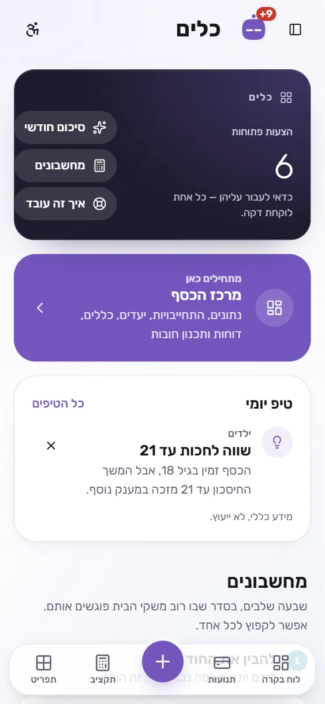
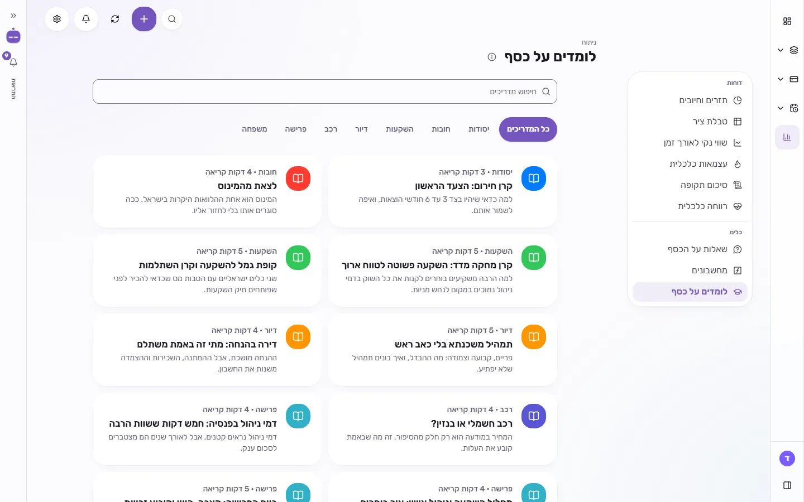
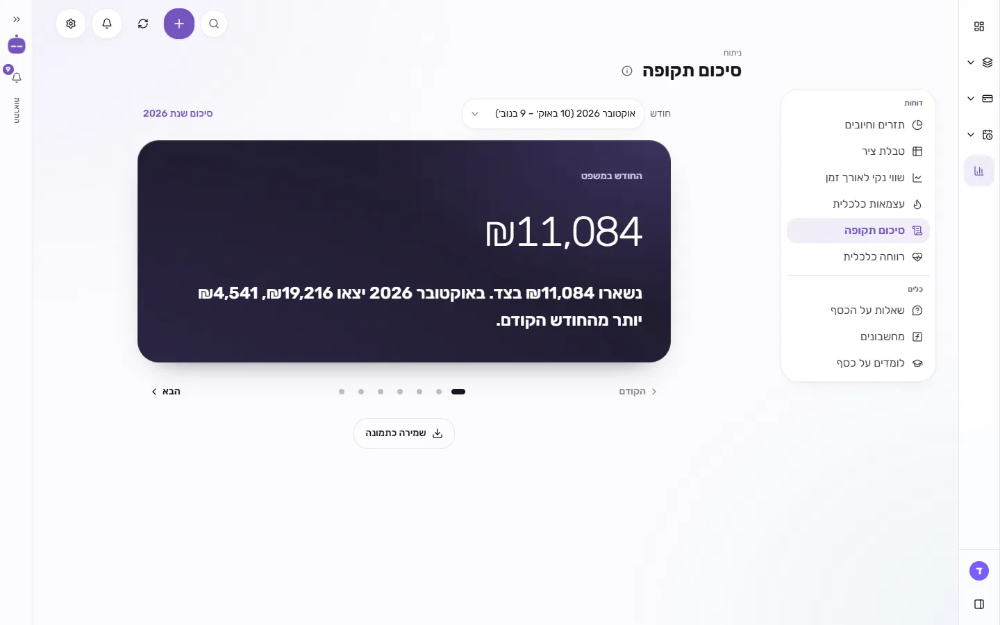

כסף רגוע
למשק הבית.
הבנקים, התקציב והעתיד שלכם במקום אחד. תקציב לכל שבוע, כלים לכל החלטה גדולה, וכל הנתונים נשארים אצלכם בבית.

זה פיפ
נסו אותו: גררו, לחצו, או בחרו מצב רוח.
באפליקציה מצב הרוח נקבע לפי הכסף של הבית, לא לפי כפתורים.כל מה שיש ב-Penny, מסך אחרי מסך.
אלה צילומי מסך אמיתיים מהאפליקציה עם נתוני דוגמה. לחיצה על צילום פותחת אותו בגודל מלא.
מספר אחד ברור: כמה צפוי להישאר
מסך הבית עונה קודם כול על השאלה החשובה: כמה כסף יישאר בסוף החודש. מצב פשוט מראה רק את זה, ומצב מתקדם פותח את כל התמונה.
- צפוי להישאר, וכמה יצא עד עכשיו מתוך התקציב
- מעבר בין חודשי השנה בלחיצה
- הוספת תנועה במזומן בשנייה
- פיפ מראה אם משהו דורש טיפול, והצעד הבא מוצג מתחת

כל התנועות, מכל הבנקים והכרטיסים
סנכרון אוטומטי מ-18 בנקים וחברות אשראי, או ייבוא מקובץ. הכול ברשימה אחת, מסודרת לפי שבועות ובצבעי הקטגוריות.
- חיפוש, סינון לפי קטגוריה, פיצול ותגיות
- תור "לבדיקה" לתנועות חדשות, והתחשבנויות בנפרד
- AI לבחירתכם מסווג תנועות, או בלי AI בכלל
- כללים אוטומטיים לבתי עסק שחוזרים

תקציב שמראה את הקצב, לא רק את הסכום
לכל קטגוריה יש תקציב, כמה כבר יצא וכמה נשאר. אפשר לבנות תקציב מהממוצע שלכם בלחיצה אחת.
- לאן הכסף הולך, לפי קטגוריות
- תצוגת 50/30/20
- סיכום לפי חודש, רבעון, חצי שנה ושנה, כולל שיעור חיסכון
- לוח שנה של חיובים צפויים וחיובים קבועים





השקעות, עצמאות כלכלית ושלבי החיים
השווי הנקי של הבית במקום אחד, ולצידו תכנון קדימה: מתי הכסף יוכל לפרנס אתכם, ומה כדאי לסדר בשלב שבו אתם נמצאים.
- נכסים, התחייבויות ושווי נקי
- הקצאה לפי סוג ומטבע, והשוואה ל-S&P 500 ולת"א 125
- מחשבון עצמאות כלכלית עם אירועים בחיים ויעדים
- רשימות לפי שלב חיים, עם קישורים למקורות רשמיים


נוח ביד אחת, כמו אפליקציה.
Penny מתאימה את עצמה לטלפון, לטאבלט ולמחשב. בטלפון יש סרגל תחתון, כפתור הוספה צף ומסכים שנגללים באגודל. הגישה מהטלפון עוברת ברשת הביתית, רק אחרי שהפעלתם אותה ועם קוד.
- חמישה לשוניות למטה: בית, תנועות, תקציב, עתיד, כלים
- ערכה כהה וערכה בהירה
- אפשר להתקין כאפליקציה במסך הבית של הטלפון






משק בית אחד, וכל אחד עם המסך שלו
Penny בנויה לבית שלם, לא למשתמש בודד. הנתונים משותפים, וההעדפות אישיות.
פרופילים למשפחה
מסך "מי משתמש?", משק בית אחד משותף, וכל אחד עם הסידור והנגישות שלו.
לשאול את הכסף
"כמה הוצאתי על אוכל בחודש שעבר?" בשפה רגילה, וגם בוט טלגרם עם משוב מיידי.
נגישות מלאה
תפריט נגישות (Alt+A) והצהרת נגישות לפי ת"י 5568 ו-WCAG 2.2 AA.
מצב פרטיות
לחיצה אחת מסתירה את כל הסכומים, למשל כשמישהו מציץ במסך.
התשובות שבאמת חשובות כאן.
יותר מ-25 מחשבונים וכלים מודרכים, מרכז ידע, ובדיקות תקופתיות. כל כלי מציין לאיזו שנה הנתונים שלו נכונים, והקוד מפנה למקור.

מחשבונים

משכנתא


מרכז ידע

בדיקת רווחה


סיכום חודשי

נגישות
הנתונים שלכם לא עוזבים את הבית.
האפליקציה רצה על המחשב שלכם ומאזינה רק לכתובת המקומית. הנתונים יושבים בקובץ אחד שאפשר לגבות, עם גיבוי אוטומטי לפני כל שינוי במבנה. שום דבר לא נשלח החוצה, חוץ מהבנק עצמו וספק AI אם בחרתם כזה.
רץ אצלכם במחשב
שירות קטן ברקע. גישה מהטלפון רק בהפעלה מפורשת ועם קוד.
LOCALHOST ONLYהסיסמאות נשארות אצלכם
פרטי ההתחברות לבנק מוצפנים בקובץ מקומי, והאפליקציה ננעלת.
AES-256-GCMאתם בוחרים את ה-AI
Claude, Ollama מקומי, או בלי AI בכלל.
CLAUDE · OLLAMA · OFFארבע דרכים להתחיל.
בפעם הראשונה, תהליך פתיחה קצר מלווה אתכם: פרופיל ופיפ, חיבור בנק או ייבוא קובץ, יעד חודשי ותקציבים.
Windows
מורידים את Penny Setup.exe ומריצים. בלי טרמינל ובלי Node.js. לעדכון, מריצים את המתקין החדש.
להורדהmacOS
מורידים את קובץ ה-dmg (ל-Apple silicon או ל-Intel) וגוררים ל-Applications. בפתיחה הראשונה: הגדרות המערכת ← פרטיות ואבטחה ← לפתוח בכל זאת.
להורדהDocker
הכול בקונטיינר מבודד, עם עדכון וחזרה אוטומטית לגרסה הקודמת אם משהו לא תקין.
docker compose up -d --build
מקוד המקור
מתקין שירות שרץ תמיד, ואפליקציה בשורת התפריטים ב-macOS וב-Windows.
git clone https://github.com/Sergey-Bar/Penny.git cd Penny && npm install npm run setup
זה כלי אישי לחשבונות שלכם בלבד. משיכת נתונים אוטומטית מבנקים עלולה להפר את תנאי השימוש שלהם. המחשבונים נותנים הערכה, לא ייעוץ.